주택관리사보-2차 (2017-09-30 기출문제)
1과목: 주택관리관계법규
1. 주택법령상 용어의 뜻에 의할 때 ‘주택’에 해당하지 않는 것을 모두 고른 것은?
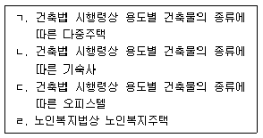
- ㄱ, ㄷ
- ㄴ, ㄷ
- ㄴ, ㄹ
- ㄱ, ㄴ, ㄹ
- ㄴ, ㄷ, ㄹ
(정답률: 알수없음)

2. 사업주체가 주택건설사업을 완료하고 주택에 대해 주택법상 사용검사를 받은 이 후, 해당 주택단지 전체 대지면적의 3퍼센트에 해당하는 토지에 대해 甲이 소유권이전등기 말소소송을 통해 해당 토지의 소유권을 회복하였다. 주택법령상 이에 관한 설명으로 옳지 않은 것은?
- 주택의 소유자들은 甲에게 해당 토지를 시가로 매도할 것을 청구할 수 있다.
- 주택소유자들이 甲에 대해 매도청구를 하는 경우 그 의사표시는 甲이 해당 토지 소유권을 회복한 날부터 2년 이내에 甲에게 송달되어야 한다.
- 甲에게 매도청구권을 행사할 수 있는 주택의 소유자들에는 해당 주택단지의 복리시설의 소유자들도 포함된다.
- 해당 주택단지에 공동주택관리법에 따른 주택관리업자가 선정되어 있는 경우에는 그 주택관리업자가 甲에 대한 매도청구에 관한 소송을 제기할 수 있다.
- 주택의 소유자들은 甲에 대한 매도청구로 인하여 발생한 비용의 전부를 사업주체에게 구상할 수 있다.
(정답률: 알수없음)
3. 주택법령상 토지임대부 분양주택에 관한 설명으로 옳은 것은?
- 토지임대부 분양주택을 공급받은 자가 토지소유자와 임대차계약을 체결한 경우 해당 주택의 구분소유권을 목적으로 그 토지 위에 임대차기간 동안 지상권이 설정된 것으로 본다.
- 토지 및 건축물의 소유권은 사업계획의 승인을 받아 토지임대부 분양주택 건설사업을 시행하는 자가 가진다.
- 토지임대부 분양주택을 양수한 자는 토지소유자와 임대차계약을 새로 체결하여야 한다.
- 토지임대부 분양주택의 토지임대료는 보증금으로 납부하는 것이 원칙이나, 토지소유자와 주택을 공급받은 자가 합의한 경우 월별 임대료로 전환하여 납부할 수 있다.
- 토지임대부 분양주택의 소유자가 임대차기간이 만료되기 전에 도시개발 관련 법률에 따라 해당 주택을 철거하고 재건축을 한 경우, 재건축한 주택은 토지임대부 분양주택이 아닌 주택으로 한다.
(정답률: 알수없음)
4. 국토교통부장관은 A지역을 투기과열지구로 지정하였다. 주택법령상 A지역에 관한 설명으로 옳지 않은 것은?
- A지역에서 주택건설사업이 시행되는 경우, 관할 시장ㆍ군수ㆍ구청장은 사업주체로 하여금 입주자 모집공고 시 해당 주택건설 지역이 투기과열지구에 포함된 사실을 공고하게 하여야 한다.
- A지역에서 주택을 보유하고 있던 자는 투기과열지구의 지정 이후 일정 기간 주택의 전매행위가 제한된다.
- 사업주체가 A지역에서 분양가상한제 주택을 건설ㆍ공급하는 경우에는 그 주택의 소유권을 제3자에게 이전할 수 없음을 소유권에 관한 등기에 부기등기하여야 한다.
- A지역에서 건설ㆍ공급되는 주택을 공급받기 위하여 입주자저축 증서를 상속하는 것은 허용된다.
- A지역에서 건설ㆍ공급되는 주택의 입주자로 선정된 지위의 일부를 생업상의 사정으로 사업주체의 동의를 받아 배우자에게 증여하는 것은 허용된다.
(정답률: 알수없음)
5. 주택법령상 리모델링주택조합에 관한 설명으로 옳은 것은?
- 세대별 주거전용면적이 85제곱미터 미만인 12층의 기존 건축물을 리모델링주택조합을 설립하여 수직증축형 리모델링을 하는 경우, 3개층까지 리모델링할 수 있다.
- 리모델링주택조합이 주택단지 전체를 리모델링하는 경우에는 주택단지 전체 구분소유자 및 의결권 전체의 동의를 받아야 한다.
- 국민주택에 대한 리모델링을 위하여 리모델링주택조합을 설립하려는 자는 관할 시장ㆍ군수ㆍ구청장에게 신고하여야 한다.
- 리모델링주택조합이 대수선인 리모델링을 하려면 해당 주택이 주택법에 따른 사용검사일 또는 건축법에 따른 사용승인일부터 15년 이상이 경과하여야 한다.
- 리모델링주택조합이 리모델링을 하려면 관할 시장ㆍ군수ㆍ구청장의 허가를 받아야 한다.
(정답률: 알수없음)
6. 공동주택관리법령상 의무관리대상 공동주택에 해당하지 않는 것은?
- 승강기가 설치된 100세대의 공동주택
- 1,000세대의 공동주택
- 중앙집중식 난방방식인 150세대의 공동주택
- 건축법상 건축허가를 받아 주택 외의 시설과 주택을 동일건축물로 건축한 건축물로서주택이 200세대인 건축물
- 지역난방방식인 150세대의 공동주택
(정답률: 알수없음)
7. 공동주택관리법령상 공동주택의 관리방법에 관한 설명으로 옳지 않은 것은?
- 의무관리대상 공동주택의 입주자등이 공동주택을 자치관리할 것을 정한 경우에는 입주자대표회의는 입주자대표회의의 회장을 자치관리기구의 대표자로 선임하고 자치관리기구를 구성하여야 한다.
- 입주자등은 전체 입주자등의 10분의 1 이상이 제안하고 전체 입주자등의 과반수가 찬성하면 공동주택의 관리방법을 변경할 수 있다.
- 의무관리대상 공동주택의 입주자등이 새로운 주택관리업자 선정을 위한 입찰에서 기존 주택관리업자의 참가를 제한하도록 입주자대표회의에 요구하려면 전체 입주자등 과반수의 서면동의가 있어야 한다.
- 입주자대표회의는 해당 공동주택의 관리에 필요하다고 인정하는 경우에는 국토교통부령으로 정하는 바에 따라 인접한 공동주택단지와 공동으로 관리하거나 500세대 이상의 단위로 나누어 관리하게 할 수 있다.
- 의무관리대상 공동주택을 건설한 사업주체는 입주예정자의 과반수가 입주할 때까지 그 공동주택을 관리하여야 한다.
(정답률: 알수없음)
8. 공동주택관리법령상 사업주체에게 하자보수를 청구할 수 있는 자에 해당하지 않는 것은?
- 집합건물의 소유 및 관리에 관한 법률에 따른 관리단
- 입주자대표회의
- 시장ㆍ군수ㆍ구청장
- 입주자
- 하자보수청구 등에 관하여 입주자 또는 입주자대표회의를 대행하는 관리주체
(정답률: 알수없음)
9. 공동주택관리법령상 관리사무소장에 관한 설명으로 옳지 않은 것은?
- 500세대 미만의 의무관리대상 공동주택에는 주택관리사를 갈음하여 주택관리사보를 해당 공동주택의 관리사무소장으로 배치할 수 있다.
- 입주자대표회의가 관리사무소장의 업무에 부당하게 간섭하여 입주자등에게 손해를 초래하는 경우 관리사무소장은 시장ㆍ군수ㆍ구청장에게 이를 보고하고, 사실 조사를 의뢰할 수 있다.
- 관리사무소장의 손해배상책임을 보장하기 위한 보증보험 또는 공제에 가입한 주택관리사등으로서 보증기간이 만료되어 다시 보증설정을 하려는 자는 그 보증기간이 만료된 후 1개월 내에 다시 보증설정을 하여야 한다.
- 관리사무소장은 입주자대표회의에서 의결하는 공동주택의 개량업무와 관련하여 입주자대표회의를 대리하여 재판상 또는 재판 외의 행위를 할 수 있다.
- 관리사무소장은 그 배치 내용과 업무의 집행에 사용할 직인을 시장ㆍ군수ㆍ구청장에게 신고하여야 한다.
(정답률: 알수없음)
10. 공동주택관리법령상 주택관리업에 관한 설명으로 옳은 것은?
- 주택관리업을 하려는 자는 국토교통부장관에게 등록하여야 한다.
- 등록을 한 주택관리업자가 그 등록이 말소된 후 3년이 지나지 아니한 때에는 다시 등록할 수 없다.
- 주택관리업의 등록을 하려는 자는 자본금(법인이 아닌 경우 자산평가액을 말한다)이 1억원 이상이어야 한다.
- 주택관리업의 등록말소처분을 하려면 청문을 거쳐야 한다.
- 주택관리업자의 지위에 관하여 공동주택관리법에 규정이 있는 것 외에는 상법을 준용한다.
(정답률: 알수없음)
11. 공공주택 특별법령상 공공주택의 운영ㆍ관리에 관한 설명으로 옳지 않은 것은?
- 공공주택사업자는 공공임대주택의 임대조건 등 임대차계약에 관한 사항을 시장ㆍ군수 또는 구청장에게 신고하여야 한다.
- 공공주택사업자가 공공임대주택에 대한 임대차계약을 체결할 때 임대차 계약기간이 끝난 후 임대주택을 그 임차인에게 분양전환할 예정이면 임대차 계약기간을 2년 이내로 할 수 있다.
- 공공분양주택 입주예정자가 입주의무기간 이내에 소유권이전등기를 완료한 상태에서 입주를 하지 아니한 경우에는 공공주택사업자가 해당 주택을 취득할 수 있다.
- 공공주택사업자는 공공주택사업자의 귀책사유가 없음에도 임대차 계약기간이 시작된 날부터 2개월 이내에 임차인이 입주하지 아니한 경우, 임대차계약을 해제 또는 해지할 수 있다.
- 공공건설임대주택의 임차인이 임대의무기간이 종료한 후 공공주택사업자가 임차인에게 분양전환을 통보한 날부터 6개월 이상 우선 분양전환에 응하지 아니하는 경우에는 공공주택사업자는 해당 공공건설임대주택을 제3자에게 매각할 수 있다.
(정답률: 알수없음)
12. 민간임대주택에 관한 특별법령상 기업형임대주택 공급촉진지구(이하 “촉진지구”라 함)에 관한 설명으로 옳지 않은 것은?
- 시ㆍ도지사는 도시지역과 경계면이 접하고 부지 면적이 2만제곱미터 이상 지역으로서 그 부지 면적 중 유상공급 면적의 50퍼센트 이상을 기업형임대주택(준주택은 제외)으로 건설ㆍ공급하기 위하여 촉진지구를 지정할 수 있다.
- 촉진지구 안에서 국유지ㆍ공유지를 제외한 토지면적의 50퍼센트 이상에 해당하는 토지소유자의 동의를 받은 자는 지정권자에게 촉진지구의 지정을 제안할 수 있다.
- 촉진지구의 면적을 10퍼센트 범위에서 증감하는 경우에는 중앙도시계획위원회 또는 시ㆍ도도시계획위원회의 심의를 거치지 아니하여도 된다.
- 지정권자가 촉진지구의 지정을 위해 관계 중앙행정기관의 장 및 관할 지방자치단체의장과 협의를 하는 경우 자연재해대책법에 따른 사전재해영향성검토에 관한 협의를 별도로 하여야 한다.
- 촉진지구가 지정고시된 날부터 2년 이내에 기업형임대주택의 건축을 시작하지 아니하면 지정권자는 촉진지구의 지정을 해제할 수 있다.
(정답률: 알수없음)
13. 건축법령상 건축물의 대수선에 해당하지 않는 것은? (단, 증축ㆍ개축 또는 재축에 해당하지 않음을 전제로 함)
- 내력벽의 벽면적을 30제곱미터 이상 수선 또는 변경하는 것
- 기둥을 증설 또는 해체하는 것
- 미관지구에서 담장을 포함한 건축물의 외부형태를 변경하는 것
- 건축물의 내부에 사용하는 마감재료를 증설 또는 해체하는 것
- 다가구주택의 가구 간 경계벽을 수선 또는 변경하는 것
(정답률: 알수없음)
14. 건축법령상 위반 건축물에 대한 조치 및 이행강제금에 관한 설명으로 옳은 것은?
- 시정명령을 받고 이행하지 아니한 건축물이 바닥면적의 합계가 400제곱미터 미만인 농업용 창고인 경우, 허가권자는 그 건축물에 대하여 다른 법령에 따른 영업이나 그 밖의 행위를 허가ㆍ면허ㆍ인가ㆍ등록ㆍ지정 등을 하지 아니하도록 요청할 수 있다.
- 시정명령을 받고 이행하지 아니한 건축물에 대하여 허가권자가 다른 법령에 따른 영업을 허가하지 아니하도록 요청한 경우 그 요청을 받은 자는 특별한 이유가 없으면 요청에 따라야 한다.
- 허가권자는 시정명령을 받은 자가 이를 이행하면 새로운 이행강제금의 부과 및 이미부과된 이행강제금의 징수를 즉시 중지하여야 한다.
- 신축 또는 증축을 하지 않더라도 임대 등 영리를 목적으로 허가 없이 다세대주택의 세대수를 3세대 증가시킨 경우 허가권자는 이행강제금의 금액을 100분의 50의 범위에 서 가중할 수 있다.
- 허가권자는 동일인이 최근 3년 내에 2회 이상 법 또는 법에 따른 명령이나 처분을 위반한 경우에는 위반행위 후 소유권이 변경된 경우에도 이행강제금의 금액을 100분의 50의 범위에서 가중할 수 있다.
(정답률: 알수없음)
15. 건축법령상 건축물의 대지와 도로에 관한 설명으로 옳지 않은 것은? (단, 건축법상 적용제외 규정 및 건축협정에 따른 특례는 고려하지 않음)
- 건축물의 대지는 건축물의 용도상 방습(防濕)의 필요가 없는 경우에는 인접한 도로면보다 낮아도 된다.
- 건축물의 대지에 확보하여야 하는 공개공지등의 면적은 대지면적의 100분의 10 이하의 범위에서 건축조례로 정한다.
- 건축물의 대지에 확보하는 공개 공지는 필로티의 구조로 설치할 수 없다.
- 해당 건축물의 출입에 지장이 없다고 인정되는 경우 건축물의 대지는 도로(자동차만의 통행에 사용되는 도로는 제외)에 2미터 이상 접할 것이 요구되지 아니 한다.
- 지표 아래 부분을 제외하고는 건축물과 담장은 건축선의 수직면을 넘어서는 아니 된다.
(정답률: 알수없음)
16. 건축법령상 가구ㆍ세대 등 간 소음 방지를 위하여 국토교통부령으로 정하는 기준에 따라 층간바닥(화장실의 바닥은 제외)을 설치하여야 하는 건축물이 아닌 것은? (단, 특별건축구역의 적용특례는 고려하지 않음)
- 단독주택 중 다중주택
- 단독주택 중 다가구주택
- 업무시설 중 오피스텔
- 숙박시설 중 다중생활시설
- 제2종 근린생활시설 중 다중생활시설
(정답률: 알수없음)
17. 건축법령상 건축허가와 건축신고에 관한 설명으로 옳지 않은 것은?
- 허가권자는 건축허가를 신청한 숙박시설의 규모 또는 형태가 교육환경을 고려할 때 부적합하다고 인정되는 경우에는 건축위원회의 심의를 거쳐 건축허가를 하지 아니할 수 있다.
- 건축위원회의 심의를 받은 자가 심의 결과를 통지 받은 날부터 2년 이내에 건축허가를 신청하지 아니하면 건축위원회 심의의 효력이 상실된다.
- 특별시나 광역시가 아닌 시에 21층 이상의 건축물을 건축하려면 도지사의 허가를 받아야 한다.
- 연면적의 합계가 100제곱미터 이하인 건축물을 신축하는 경우 건축신고를 하면 건축허가를 받은 것으로 본다.
- 단층 건축물을 바닥면적의 합계가 85제곱미터 이내로 재축하는 경우 건축신고를 하면 건축허가를 받은 것으로 본다.
(정답률: 알수없음)
18. 도시 및 주거환경정비법령상 주택재개발사업에 관한 설명으로 옳은 것은?
- 주택재개발사업의 경우 ‘토지등소유자’는 정비구역안에 소재한 토지 또는 건축물의 소유자를 말하며, 그 지상권자는 포함되지 않는다.
- 주택재개발사업은 관리처분계획에 따라 주택, 부대ㆍ복리시설 등을 건설ㆍ공급하는 방법으로 하여야 하며, 환지로 공급하는 방법에 의할 수는 없다.
- 주택재개발사업은 조합을 설립하여 시행하거나 토지등소유자가 직접 시행할 수 있다.
- 주택재개발사업의 시행 여부를 결정하려면 안전진단을 실시하여야 한다.
- 주택재개발조합 설립인가 후 토지의 매매로 인하여 조합원의 권리가 이전된 경우의 조합원의 신규가입은 조합원의 동의없이 시장ㆍ군수에게 신고하고 변경할 수 있다.
(정답률: 알수없음)
19. 화재예방, 소방시설 설치ㆍ유지 및 안전관리에 관한 법령상 특정소방대상물에 소방시설을 설치하려는 경우 성능위주설계를 하여야 하는 것이 아닌 것은? (단, 신축하는 경우를 전제로 함)
- 건축물의 높이가 100미터인 아파트
- 연면적 5만제곱미터인 공항시설
- 연면적 4만제곱미터인 도시철도 시설
- 지하층을 포함한 층수가 30층인 종합병원
- 하나의 건축물에 영화 및 비디오물의 진흥에 관한 법률에 따른 영화상영관이 10개인 극장
(정답률: 알수없음)
20. 집합건물의 소유 및 관리에 관한 법령상 관리단 및 관리단의 사무를 집행하는 관리인에 관한 설명으로 옳지 않은 것은?
- 건물에 대하여 구분소유 관계가 성립되면 구분소유자 전원을 구성원으로 하여 건물과 그 대지 및 부속시설의 관리에 관한 사업의 시행을 목적으로 하는 관리단이 설립된다.
- 관리인은 구분소유자이어야 하며, 그 임기는 3년의 범위에서 규약으로 정한다.
- 구분소유자의 특별승계인은 승계 전에 발생한 관리단의 채무에 관하여도 책임을 진다.
- 관리인은 규약에 달리 정한 바가 없으면 월 1회 구분소유자에게 관리단의 사무 집행을 위한 분담금액과 비용의 산정방법을 서면으로 보고하여야 한다.
- 관리인에게 부정한 행위나 그 밖에 그 직무를 수행하기에 적합하지 아니한 사정이 있을 때에는 각 구분소유자는 관리인의 해임을 법원에 청구할 수 있다.
(정답률: 알수없음)
21. 승강기시설 안전관리법령상 승강기의 안전에 관한 설명으로 옳은 것을 모두 고른 것은?
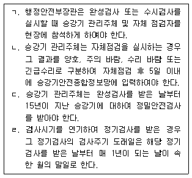
- ㄱ, ㄷ
- ㄴ, ㄷ
- ㄷ, ㄹ
- ㄱ, ㄴ, ㄹ
- ㄱ, ㄴ, ㄷ, ㄹ
(정답률: 알수없음)
22. 전기사업법령상 전기판매사업자가 전기의 공급을 거부할 수 있는 정당한 사유가 아닌 것은?
- 전기의 공급을 요청하는 자가 전기판매사업자의 정당한 조건에 따르지 아니하고 다른방법으로 전기의 공급을 요청하는 경우
- 1만킬로와트 이상 10만킬로와트 미만으로 전기를 사용하려는 자가 사용 예정일 2년전까지 전기판매사업자에게 미리 전기의 공급을 요청하지 아니하는 경우
- 발전용 전기설비의 정기적인 보수기간 중 전기의 공급을 요청하는 경우
- 전기요금을 미납한 전기사용자가 납기일의 다음 날부터 공급약관에서 정하는 기한까지 해당 요금을 납부하지 아니하는 경우
- 일반용전기설비의 사용전점검을 받지 아니하고 전기공급을 요청하는 경우
(정답률: 알수없음)
23. 시설물의 안전관리에 관한 특별법령상 안전점검 및 정밀안전진단에 관한 설명으로 옳은 것은?
- 관리주체가 소관 시설물에 대하여 실시하는 안전점검은 정기점검과 정밀점검의 두 가지로 구분된다.
- 시설물의 하자담보책임기간이 끝나기 전에 마지막으로 실시하는 정밀점검의 경우에는 관리주체가 직접 실시할 수 없으며, 유지관리업자로 하여금 실시하게 하여야 한다.
- 관리주체는 16층 이상의 공동주택에 대하여 안전점검 및 정밀안전진단지침에 따라 정기적으로 정밀안전진단을 실시하여야 한다.
- 민간관리주체가 어음ㆍ수표의 지급 불능으로 인한 부도로 안전점검을 실시하지 못하게 될 때에는 관할 특별자치도지사ㆍ시장ㆍ군수 또는 구청장이 민간관리주체를 대신하여 안전점검을 실시할 수 있고, 이 경우 안전점검에 드는 비용은 그 민간관리주체에게 부담하게 할 수 없다.
- 안전진단전문기관이나 한국시설안전공단은 다른 안전진단전문기관과 공동으로 정밀안전진단을 실시할 수 있다.
(정답률: 알수없음)
24. 소방기본법령상 소방본부장이나 소방서장이 명령하거나 취할 수 있는 화재의 예방조치 등에 해당하지 않는 것은?
- 화재예방상 위험하다고 인정되는 흡연을 하고 있는 사람에 대한 흡연의 금지
- 시장지역 중 화재발생 우려가 높은 지역에 대한 화재경계지구 지정
- 화기가 있을 우려가 있는 재를 관리자로 하여금 처리하도록 하는 것
- 불에 탈 수 있음에도 함부로 버려둔 위험물의 소유자에게 그 물건을 옮기게 하는 조치
- 불에 탈 수 있는 물건의 소유자ㆍ관리자 또는 점유자의 주소와 성명을 알 수 없어서 필요한 명령을 할 수 없을 때 소속 공무원으로 하여금 그 물건을 옮기도록 하는 것 공동주택관리실무(객관식)
(정답률: 알수없음)
25. 공동주거관리의 필요성에 관한 다음의 설명에 부합하는 것은?
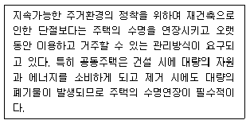
- 양질의 사회적 자산형성
- 자원낭비로부터의 환경보호
- 자연재해로부터의 안전성 확보
- 공동주거를 통한 자산가치의 향상
- 지속적인 커뮤니티로부터의 주거문화 계승
(정답률: 알수없음)
2과목: 공동주택관리실무
26. 공동주택관리법령상 층간소음에 관한 설명으로 옳지 않은 것은?
- 공동주택 층간소음의 범위와 기준은 국토교통부와 환경부의 공동부령으로 정한다.
- 층간소음으로 피해를 입은 입주자등은 관리주체에게 층간소음 발생 사실을 알리고, 관리주체가 층간소음 피해를 끼친 해당 입주자등에게 층간소음 발생을 중단하거나 차음조치를 권고하도록 요청할 수 있다.
- 관리주체는 필요한 경우 입주자등을 대상으로 층간소음의 예방, 분쟁의 조정 등을 위한 교육을 실시할 수 있다.
- 욕실에서 급수ㆍ배수로 인하여 발생하는 소음의 경우 공동주택 층간소음의 범위에 포함되지 않는다.
- 관리주체의 조치에도 불구하고 층간소음 발생이 계속될 경우에는 층간소음 피해를 입은 입주자등은 공동주택관리법에 따른 공동주택관리 분쟁조정위원회가 아니라 환경분쟁조정법에 따른 환경분쟁조정위원회에 조정을 신청하여야 한다.
(정답률: 알수없음)
27. 공동주택관리법령상 동별 대표자 선출공고에서 정한 각종 서류제출 마감일을 기준으로 동별 대표자가 될 수 없는 자에 해당되지 않는 사람은?
- 해당 공동주택 관리주체의 소속 임직원
- 관리비를 최근 3개월 이상 연속하여 체납한 사람
- 공동주택의 소유자가 서면으로 위임한 대리권이 없는 소유자의 배우자
- 주택법을 위반한 범죄로 징역 6개월의 집행유예 1년의 선고를 받고 그 유예기간이 종료한 때로부터 2년이 지난 사람
- 동별 대표자를 선출하기 위해 입주자등에 의해 구성된 선거관리위원회 위원이었으나 1개월 전에 사퇴하였고 그 남은 임기 중에 있는 사람
(정답률: 알수없음)
28. 공동주택관리법령상 주택관리사등에 대한 행정처분기준 중 개별기준에 관한 규정의 일부이다. ㄱ~ㄷ에 들어갈 내용으로 옳은 것은?
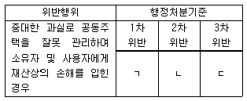
- ㄱ: 자격정지 3개월, ㄴ: 자격정지 3개월, ㄷ: 자격정지 6개월
- ㄱ: 자격정지 3개월, ㄴ: 자격정지 3개월, ㄷ: 자격취소
- ㄱ: 자격정지 3개월, ㄴ: 자격정지 6개월, ㄷ: 자격정지 6개월
- ㄱ: 자격정지 3개월, ㄴ: 자격정지 6개월, ㄷ: 자격취소
- ㄱ: 자격정지 6개월, ㄴ: 자격정지 6개월, ㄷ: 자격취소
(정답률: 알수없음)
29. 공동주택관리법령상 공동주택의 관리주체가 관할 특별자치시장ㆍ특별자치도지사ㆍ시장ㆍ군수ㆍ구청장(자치구의 구청장을 말한다)의 허가를 받거나 신고를 하여야 하는 행위를 모두 고른 것은?
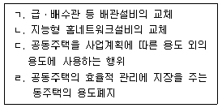
- ㄱ, ㄷ
- ㄷ, ㄹ
- ㄱ, ㄴ, ㄹ
- ㄱ, ㄷ, ㄹ
- ㄴ, ㄷ, ㄹ
(정답률: 알수없음)
30. 공동주택관리와 관련한 문서나 서류 또는 자료의 보존(보관)기간에 관한 설명으로 옳은 것을 모두 고른 것은?
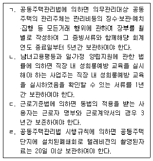
- ㄱ, ㄷ
- ㄱ, ㄹ
- ㄴ, ㄷ
- ㄴ, ㄹ
- ㄷ, ㄹ
(정답률: 알수없음)
31. 남.녀고용평등과 일ㆍ가정 양립지원에 관한 법령상 직장 내 성희롱의 예방 및 벌칙에 관한 설명으로 옳지 않은 것은?
- 직장 내 성희롱 예방 교육을 실시해야 하는 사업주는 그 교육을 연 1회 이상 하여야 한다.
- 성희롱 예방 교육기관은 고용노동부령으로 정하는 기관 중에서 지정하되, 고용노동부령으로 정하는 강사를 1명 이상 두어야 한다.
- 고용노동부장관은 성희롱 예방 교육기관이 정당한 사유 없이 고용노동부령으로 정하는 강사를 3개월 이상 계속하여 두지 아니한 경우 그 지정을 취소하여야 한다.
- 이 법의 적용을 받는 사업주가 직장 내 성희롱과 관련하여 피해를 입은 근로자에게 해고나 그 밖의 불리한 조치를 하는 경우에는 3년 이하의 징역 또는 2천만원 이하의 벌금에 처한다.
- 직장 내 성희롱을 하여 최근 3년 이내에 과태료처분을 받은 사실이 있는 사업주가 다시 직장 내 성희롱을 한 경우 1천만원의 과태료에 해당한다.
(정답률: 알수없음)
32. 공동주택관리법령상 입주자대표회의에 관한 설명으로 옳지 않은 것은?
- 입주자대표회의는 4명 이상으로 구성하되, 동별 세대수에 비례하여 시장∙군수∙구청장이 정한 선거구에 따라 선출된 대표자로 구성한다.
- 입주자대표회의에는 회장 1명, 감사 2명 이상, 이사 1명 이상의 임원을 두어야 한다.
- 동별 대표자의 임기나 그 제한에 관한 사항, 동별 대표자 또는 입주자대표회의 임원의 선출이나 해임 방법 등 입주자대표회의의 구성 및 운영에 필요한 사항과 입주자대표회의의 의결 방법은 대통령령으로 정한다.
- 입주자대표회의의 의결사항은 관리규약, 관리비, 시설의 운영에 관한 사항 등으로 한다.
- 의무관리대상 공동주택에 해당하는 하나의 공동주택단지를 수 개의 공구로 구분하여 순차적으로 건설하는 경우 먼저 입주한 공구의 입주자등은 입주자대표회의를 구성할수 있다. 다만, 다음 공구의 입주예정자의 과반수가 입주한 때에는 다시 입주자대표회의를 구성하여야 한다.
(정답률: 알수없음)
33. 공동주택관리법 시행령 제27조에 따른 회계감사를 받아야 하는 경우 그 감사의 대상이 되는 재무제표를 모두 고른 것은?
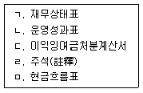
- ㄱ, ㄴ
- ㄷ, ㅁ
- ㄴ, ㄷ, ㄹ
- ㄱ, ㄴ, ㄷ, ㄹ
- ㄱ, ㄴ, ㄷ, ㄹ, ㅁ
(정답률: 알수없음)
34. 민간임대주택에 관한 특별법령상 민간임대주택의 관리 및 주택임대관리업 등에 관한 설명으로 옳은 것은?
- 임대사업자는 민간임대주택이 300세대 이상의 공동주택의 경우에는 공동주택관리법에 따른 주택관리업자에게 관리를 위탁하여야 하며, 자체관리할 수 없다.
- 주택임대관리업은 주택의 소유자로부터 주택을 임차하여 자기책임으로 전대하는 형태의 위탁관리형 주택임대관리업과 주택의 소유자로부터 수수료를 받고 임대료 부과∙징수및 시설물 유지∙관리 등을 대행하는 형태의 자기관리형 주택임대관리업으로 구분한다.
- 지방공기업법에 따라 설립된 지방공사가 주택임대관리업을 하려는 경우 신청서에 대통령령으로 정하는 서류를 첨부하여 시장∙군수∙구청장에게 제출하여야 한다.
- 민간임대주택에 관한 특별법에 위반하여 주택임대관리업의 등록이 말소된 후 2년이 지나지 아니한 자는 주택임대관리업의 등록을 할 수 없다.
- 주택임대관리업자는 주택임대관리업자의 현황 중 전문인력의 경우 1개월마다 시장∙군수∙구청장에게 신고하여야 한다.
(정답률: 알수없음)
35. 민간임대주택에 관한 특별법령상 임대주택분쟁조정위원회에 관한 설명으로 옳은 것은?
- 위원회는 위원장 1명을 포함하여 20명 이내로 구성한다.
- 분쟁조정은 임대사업자와 임차인대표회의의 신청 또는 위원회의 직권으로 개시한다.
- 공공임대주택의 임차인대표회의는 공공주택사업자와 분양전환승인에 관하여 분쟁이 있는 경우 위원회에 조정을 신청할 수 있다.
- 위원회의 위원장은 위원 중에서 호선한다.
- 공무원이 아닌 위원의 임기는 2년으로 하되, 두 차례만 연임할 수 있다.
(정답률: 알수없음)
36. 최.저임금법령상 최저임금의 적용과 효력에 관한 설명으로 옳지 않은 것은?
- 신체장애로 근로능력이 현저히 낮은 자에 대해서는 사용자가 고용노동부장관의 인가를 받은 경우 최저임금의 효력을 적용하지 아니한다.
- 임금이 도급제나 그 밖에 이와 비슷한 형태로 정해진 경우에 근로시간을 파악하기 어렵다고 인정되면 해당 근로자의 생산고(生産高) 또는 업적의 일정단위에 의하여 최저임금액을 정한다.
- 최저임금의 적용을 받는 근로자와 사용자 사이의 근로계약 중 최저임금액에 미치지 못하는 금액을 임금으로 정한 부분은 무효로 하며, 이 경우 무효로 된 부분은 최저임금법으로 정한 최저임금액과 동일한 임금을 지급하기로 한 것으로 본다.
- 도급으로 사업을 행하는 경우 도급인이 책임져야 할 사유로 수급인이 근로자에게 최저임금액에 미치지 못하는 임금을 지급한 경우 도급인은 해당 수급인과 연대(連帶)하여 책임을 진다.
- 최저임금의 적용을 받는 근로자가 자기의 사정으로 소정의 근로일의 근로를 하지 아니한 경우 근로하지 아니한 일에 대하여 사용자는 최저임금액의 2분의 1에 해당하는 임금을 지급하여야 한다.
(정답률: 알수없음)
37. 공조설비의 냉온수 공급관과 환수관의 양측압력을 동시에 감지하여 압력 균형을 유지시키는 용도의 밸브는?
- 온도조절밸브
- 차압조절밸브
- 공기빼기밸브
- 안전밸브
- 감압밸브
(정답률: 알수없음)
38. 공동주택 배수관에서 발생하는 발포존(zone)에 관한 설명으로 옳지 않은 것은?
- 물은 거품보다 무겁기 때문에 먼저 흘러내리고 거품은 배수수평주관과 같이 수평에 가까운 부분에서 오랫동안 정체한다.
- 각 세대에서 세제가 포함된 배수를 배출할 때 많은 거품이 발생한다.
- 수직관 내에 어느 정도 높이까지 거품이 충만하면 배수수직관 하층부의 압력상승으로 트랩의 봉수가 파괴되어 거품이 실내로 유입되게 된다.
- 배수수평주관의 관경은 통상의 관경산정 방법에 의한 관경보다 크게 하는 것이 유리하다.
- 발포 존의 발생방지를 위하여 저층부와 고층부의 배수수직관을 분리하지 않는다.
(정답률: 알수없음)
39. 국가화재안전기준(NFSC)상 소화기구 및 자동소화장치의 주거용 주방자동소화장치에 관한 설치기준이다. ( )에 들어갈 내용을 옳게 나열한 것은?
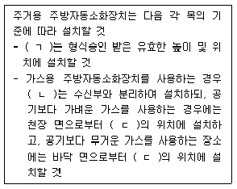
- ㄱ: 감지부, ㄴ:탐지부, ㄷ: 30 cm 이하
- ㄱ: 환기구, ㄴ:감지부, ㄷ: 30 cm 이하
- ㄱ: 수신부, ㄴ:환기구, ㄷ: 30 cm 이상
- ㄱ: 감지부, ㄴ:중계부, ㄷ: 60 cm 이하
- ㄱ: 수신부, ㄴ:탐지부, ㄷ: 60 cm 이상
(정답률: 알수없음)
40. 급탕량이 3m3/h이고, 급탕온도 60℃, 급수온도 10℃일 때의 급탕부하는? (단, 물의 비열은 4.2 kJ/kgㆍK, 물 1m3는 1000 kg으로 한다.)
- 175 kW
- 185 kW
- 195 kW
- 2⑤ kW
- 215 kW
(정답률: 알수없음)
41. 다음은 전기사업법령상 정기검사의 대상ㆍ기준 및 절차 등에서 공동주택의 정기검사대상 전기설비 및 검사시기에 관한 내용이다. ( )에 들어갈 숫자를 옳게 나열한 것은?
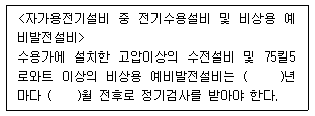
- 2, 1
- 2, 2
- 3, 2
- 3, 4
- 3, 6
(정답률: 알수없음)
42. 배.수관에 설치하는 청소구(clean out)의 설치 위치로 옳지 않은 것은?
- 배수수직관과 신정통기관의 접속부분
- 배수수평지관 및 배수수평주관의 기점(수평관의 최상단부)
- 배수수직관의 최하단부
- 배수배관이 45 ° 이상 각도로 방향을 바꾸는 부분
- 길이가 긴 배수수평관의 중간 부분
(정답률: 알수없음)
43. 가로 10 m, 세로 20 m, 천장높이 5 m인 기계실에서, 기기의 발열량이 40 kW일 때 필요한 최소 환기횟수(회/h)는? (단, 실내 설정온도 28℃, 외기온도 18℃, 공기의 비중 1.2kg/m3, 공기의 비열 1.0 kJ/kgㆍK로 하고 주어진 조건외의 사항은 고려하지 않음)
- 10
- 12
- 14
- 16
- 18
(정답률: 알수없음)
44. 공동주택 지하저수조 설치방법에 관한 설명으로 옳지 않은 것은?
- 저수조에는 청소, 점검, 보수를 위한 맨홀을 설치하고 오염물이 들어가지 않도록 뚜껑을 설치한다.
- 저수조 주위에는 청소, 점검, 보수를 위하여 충분한 공간을 확보한다.
- 저수조 내부는 위생에 지장이 없는 공법으로 처리한다.
- 저수조 상부에는 오수배관이나 오염이 염려되는 기기류 설치를 피한다.
- 저수조의 넘침(over flow)관은 일반배수계통에 직접 연결한다.
(정답률: 알수없음)
45. 다음은 주택건설기준 등에 관한 규정의 승강기 등에 관한 기준이다. ( )에 들어 갈 숫자를 옳게 나열한 것은?
- ㄱ: 5, ㄴ: 8, ㄷ: 100
- ㄱ: 6, ㄴ: 8, ㄷ: 50
- ㄱ: 6, ㄴ: 10, ㄷ: 100
- ㄱ: 8, ㄴ: 10, ㄷ: 50
- ㄱ: 8, ㄴ: 10, ㄷ: 200
(정답률: 알수없음)
46. 국가화재안전기준(NFSC)상 자동화재탐지설비에 관한 내용으로 옳은 것은?
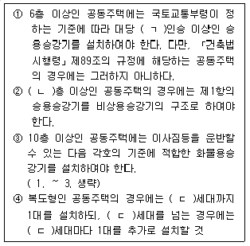
- 수신기란 화재시 발생하는 열, 연기, 불꽃 또는 연소생성물을 자동적으로 감지하여 중계기기에 발신하는 장치를 말한다.
- 하나의 경계구역의 면적은 600 m2 이하로 하고 한변의 길이는 60 m 이하로 할것. 다만, 해당 특정소방대상물의 주된 출입구에서 그 내부 전체가 보이는 것에 있어서는 한 변의 길이가 60 m의 범위 내에서 1200 m2 이하로 할 수 있다.
- 음향장치는 정격전압의 90 % 전압에서 음향을 발할 수 있는 것으로 해야 하며 음량은 부착된 음향장치의 중심으로부터 1 m 떨어진 위치에서 80 dB 이상이 되는 것으로 해야 한다.
- 자동화재탐지설비에는 그 설비에 대한 감시상태를 60분간 지속한 후 유효하게 10분 이상 경보할 수 있는 축전지설비(수신기에 내장하는 경우를 포함한다) 또는 전기저장장치(외부 전기에너지를 저장해 두었다가 필요한 때 전기를 공급하는 장치)를 설치하여야 한다. 다만, 상용전원이 축전지설비인 경우에는 그러하지 아니하다.
- 수신기의 조작 스위치는 바닥으로부터의 높이가 1.6 m 이상인 장소에 설치해야 한다.
(정답률: 알수없음)
47. 수도 본관으로부터 10 m 높이에 있는 세면기를 수도직결방식으로 배관하였을 때수도 본관 연결 부분의 최소필요압력(MPa)은? (단, 수도 본관에서 세면기까지 배관의 총압력손실은 수주(水柱) 높이의 40 %, 세면기 최소 필요압력은 3 mAq, 수주(水柱) 1 mAq는 0.01 MPa로 한다.)
- 0.07
- 0.11
- 0.17
- 0.70
- 1.70
(정답률: 알수없음)
48. 다음은 수도법령상 급수관의 상태검사 및 조치 등에서 급수설비 상태검사의 구분 및 방법에 관한 내용이다. 옳지 않은 것을 모두 고른 것은?
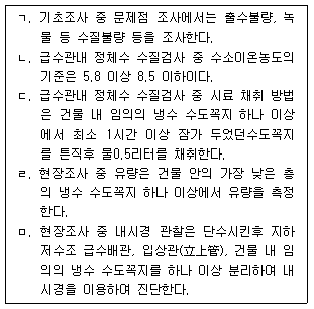
- ㄱ, ㄴ
- ㄱ, ㄷ
- ㄴ, ㅁ
- ㄷ, ㄹ
- ㄹ, ㅁ
(정답률: 알수없음)
3과목: 주택관리관계법규(주관식)
49. 주택법 제2조(정의) 규정의 일부이다. ( )에 들어갈 용어를 쓰시오.
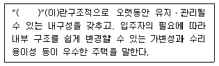
- 정답 : 장수명 주택 또는 장수명
- 본 문제는 주관식입니다. 1번을 누르면 정답 처리 됩니다.
- 본 문제는 주관식입니다. 1번을 누르면 정답 처리 됩니다.
- 본 문제는 주관식입니다. 1번을 누르면 정답 처리 됩니다.
- 본 문제는 주관식입니다. 1번을 누르면 정답 처리 됩니다.
(정답률: 알수없음)
50. 주택법 제2조(정의) 규정 중 “리모델링”에 관한 내용의 일부이다. ( )에 들어갈 숫자를 순서대로 쓰시오.
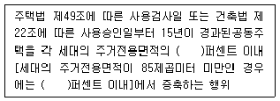
- 정답 : 30, 40
- 본 문제는 주관식입니다. 1번을 누르면 정답 처리 됩니다.
- 본 문제는 주관식입니다. 1번을 누르면 정답 처리 됩니다.
- 본 문제는 주관식입니다. 1번을 누르면 정답 처리 됩니다.
- 본 문제는 주관식입니다. 1번을 누르면 정답 처리 됩니다.
(정답률: 알수없음)
51. 주택법 시행령 제10조(도시형 생활주택) 규정의 일부이다. 원룸형 주택의 요건으로 ( )에 들어갈 숫자를 순서대로 쓰시오.
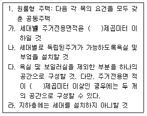
- 정답 : 50, 30
- 본 문제는 주관식입니다. 1번을 누르면 정답 처리 됩니다.
- 본 문제는 주관식입니다. 1번을 누르면 정답 처리 됩니다.
- 본 문제는 주관식입니다. 1번을 누르면 정답 처리 됩니다.
- 본 문제는 주관식입니다. 1번을 누르면 정답 처리 됩니다.
(정답률: 알수없음)
52. 공동주택관리법 제26조(회계감사) 규정의 일부이다. ( )에 들어갈 용어를 쓰시오.
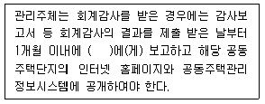
- 정답 : 입주자 대표회의
- 본 문제는 주관식입니다. 1번을 누르면 정답 처리 됩니다.
- 본 문제는 주관식입니다. 1번을 누르면 정답 처리 됩니다.
- 본 문제는 주관식입니다. 1번을 누르면 정답 처리 됩니다.
- 본 문제는 주관식입니다. 1번을 누르면 정답 처리 됩니다.
(정답률: 알수없음)
53. 공동주택관리법 제67조(주택관리사등의 자격) 규정의 일부이다. ( )에 들어갈 숫자를 순서대로 쓰시오.
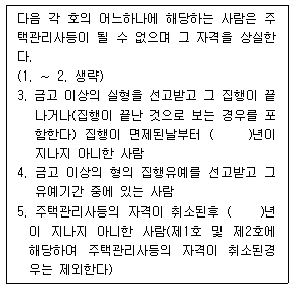
- 정답 : 2, 3
- 본 문제는 주관식입니다. 1번을 누르면 정답 처리 됩니다.
- 본 문제는 주관식입니다. 1번을 누르면 정답 처리 됩니다.
- 본 문제는 주관식입니다. 1번을 누르면 정답 처리 됩니다.
- 본 문제는 주관식입니다. 1번을 누르면 정답 처리 됩니다.
(정답률: 알수없음)
54. 공동주택관리법 시행령 제21조(관리규약의 제정 및 개정 등 신고) 규정의 일부이다. ( )에 들어갈 숫자를 쓰시오.
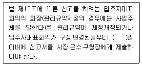
- 정답 : 30
- 본 문제는 주관식입니다. 1번을 누르면 정답 처리 됩니다.
- 본 문제는 주관식입니다. 1번을 누르면 정답 처리 됩니다.
- 본 문제는 주관식입니다. 1번을 누르면 정답 처리 됩니다.
- 본 문제는 주관식입니다. 1번을 누르면 정답 처리 됩니다.
(정답률: 알수없음)
55. 공공주택 특별법 시행령 제3조(공공주택의 건설비율) 규정의 일부이다. ( )에 들어갈 숫자를 순서대로 쓰시오.
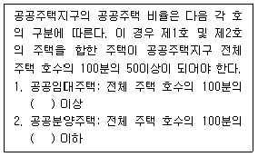
- 정답 : 35, 15
- 본 문제는 주관식입니다. 1번을 누르면 정답 처리 됩니다.
- 본 문제는 주관식입니다. 1번을 누르면 정답 처리 됩니다.
- 본 문제는 주관식입니다. 1번을 누르면 정답 처리 됩니다.
- 본 문제는 주관식입니다. 1번을 누르면 정답 처리 됩니다.
(정답률: 알수없음)
56. 민간임대주택에 관한 특별법 제3조(다른 법률과의 관계) 규정이다. ( )에 들어갈 법률명을 쓰시오.
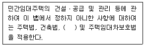
- 정답 : 공동주택관리법
- 본 문제는 주관식입니다. 1번을 누르면 정답 처리 됩니다.
- 본 문제는 주관식입니다. 1번을 누르면 정답 처리 됩니다.
- 본 문제는 주관식입니다. 1번을 누르면 정답 처리 됩니다.
- 본 문제는 주관식입니다. 1번을 누르면 정답 처리 됩니다.
(정답률: 알수없음)
57. 건축법 제14조(건축신고) 규정의 일부이다. ( )에 들어갈 숫자를 쓰시오.
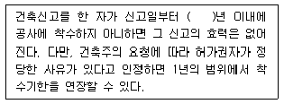
- 정답 : 1
- 본 문제는 주관식입니다. 1번을 누르면 정답 처리 됩니다.
- 본 문제는 주관식입니다. 1번을 누르면 정답 처리 됩니다.
- 본 문제는 주관식입니다. 1번을 누르면 정답 처리 됩니다.
- 본 문제는 주관식입니다. 1번을 누르면 정답 처리 됩니다.
(정답률: 알수없음)
58. 건축법 시행령 제2조(정의) 규정의 일부이다. ( )에 들어갈 용어를 쓰시오.
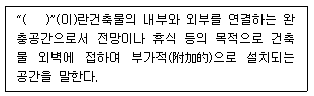
- 정답 : 발코니
- 본 문제는 주관식입니다. 1번을 누르면 정답 처리 됩니다.
- 본 문제는 주관식입니다. 1번을 누르면 정답 처리 됩니다.
- 본 문제는 주관식입니다. 1번을 누르면 정답 처리 됩니다.
- 본 문제는 주관식입니다. 1번을 누르면 정답 처리 됩니다.
(정답률: 알수없음)
59. 도시 및 주거환경정비법 제2조(정의) 규정의 일부이다. ( )에 들어갈 용어를 쓰시오.
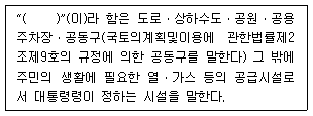
- 정답 : 정비기반시설
- 본 문제는 주관식입니다. 1번을 누르면 정답 처리 됩니다.
- 본 문제는 주관식입니다. 1번을 누르면 정답 처리 됩니다.
- 본 문제는 주관식입니다. 1번을 누르면 정답 처리 됩니다.
- 본 문제는 주관식입니다. 1번을 누르면 정답 처리 됩니다.
(정답률: 알수없음)
60. 승강기시설 안전관리법 제12조의2 규정의 일부이다. ( )에 들어갈 용어를 쓰시오.
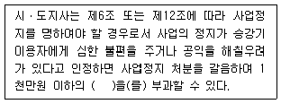
- 정답 : 과징금
- 본 문제는 주관식입니다. 1번을 누르면 정답 처리 됩니다.
- 본 문제는 주관식입니다. 1번을 누르면 정답 처리 됩니다.
- 본 문제는 주관식입니다. 1번을 누르면 정답 처리 됩니다.
- 본 문제는 주관식입니다. 1번을 누르면 정답 처리 됩니다.
(정답률: 알수없음)
61. 화재예방, 소방시설 설치ㆍ유지 및 안전관리에 관한 법률제21조(공동 소방안전 관리) 규정의 일부이다. ( )에 들어갈 숫자를 쓰시오.
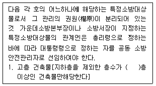
- 정답 : 11
- 본 문제는 주관식입니다. 1번을 누르면 정답 처리 됩니다.
- 본 문제는 주관식입니다. 1번을 누르면 정답 처리 됩니다.
- 본 문제는 주관식입니다. 1번을 누르면 정답 처리 됩니다.
- 본 문제는 주관식입니다. 1번을 누르면 정답 처리 됩니다.
(정답률: 알수없음)
62. 전기설비의 안전관리에 관하여 규정하고 있는 전기사업법 제61조 규정의 일부이다. ( )에 공통적으로 들어갈 용어를 쓰시오.
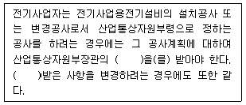
- 정답 : 인가
- 본 문제는 주관식입니다. 1번을 누르면 정답 처리 됩니다.
- 본 문제는 주관식입니다. 1번을 누르면 정답 처리 됩니다.
- 본 문제는 주관식입니다. 1번을 누르면 정답 처리 됩니다.
- 본 문제는 주관식입니다. 1번을 누르면 정답 처리 됩니다.
(정답률: 알수없음)
63. 도시재정비 촉진을 위한 특별법 제2조(정의) 규정의 일부이다. ( )에 들어갈 용어를 쓰시오.
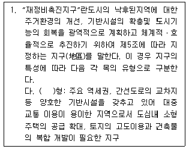
- 정답 : 고밀복합 또는 고밀복합형
- 본 문제는 주관식입니다. 1번을 누르면 정답 처리 됩니다.
- 본 문제는 주관식입니다. 1번을 누르면 정답 처리 됩니다.
- 본 문제는 주관식입니다. 1번을 누르면 정답 처리 됩니다.
- 본 문제는 주관식입니다. 1번을 누르면 정답 처리 됩니다.
(정답률: 알수없음)
64. 시설물의 안전관리에 관한 특별법 제7조의2(내진성능평가 등) 규정의 일부이다. ( )에 들어갈 숫자를 쓰시오.
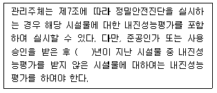
- 정답 : 20
- 본 문제는 주관식입니다. 1번을 누르면 정답 처리 됩니다.
- 본 문제는 주관식입니다. 1번을 누르면 정답 처리 됩니다.
- 본 문제는 주관식입니다. 1번을 누르면 정답 처리 됩니다.
- 본 문제는 주관식입니다. 1번을 누르면 정답 처리 됩니다.
(정답률: 알수없음)
4과목: 공동주택관리실무(주관식)
65. 공동주택관리법령상 하자보수보증금의 반환에 관한 규정의 일부이다. ( )에 들어갈 숫자를 순서대로 쓰시오. (단, 하자보수보증금을 사용하지 않은 것으로 전제함)
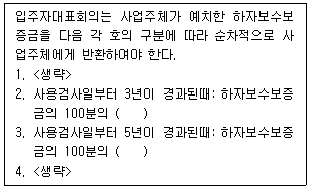
- 정답 : 40, 25
- 본 문제는 주관식입니다. 1번을 누르면 정답 처리 됩니다.
- 본 문제는 주관식입니다. 1번을 누르면 정답 처리 됩니다.
- 본 문제는 주관식입니다. 1번을 누르면 정답 처리 됩니다.
- 본 문제는 주관식입니다. 1번을 누르면 정답 처리 됩니다.
(정답률: 알수없음)
66. 공동주택관리법령상 장기수선계획에 관한 규정이다. ( )에 들어갈 용어와 숫자를 순서대로 쓰시오.
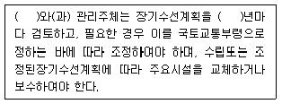
- 정답 : 입주자대표회의, 3
- 본 문제는 주관식입니다. 1번을 누르면 정답 처리 됩니다.
- 본 문제는 주관식입니다. 1번을 누르면 정답 처리 됩니다.
- 본 문제는 주관식입니다. 1번을 누르면 정답 처리 됩니다.
- 본 문제는 주관식입니다. 1번을 누르면 정답 처리 됩니다.
(정답률: 알수없음)
67. 근.로기준법상 이행강제금에 관한 내용이다. ( )에 들어갈 숫자를 순서대로 쓰시오.
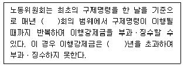
- 정답 : 2, 2
- 본 문제는 주관식입니다. 1번을 누르면 정답 처리 됩니다.
- 본 문제는 주관식입니다. 1번을 누르면 정답 처리 됩니다.
- 본 문제는 주관식입니다. 1번을 누르면 정답 처리 됩니다.
- 본 문제는 주관식입니다. 1번을 누르면 정답 처리 됩니다.
(정답률: 알수없음)
68. 민간임대주택에 관한 특별법령상 임차인대표회의에 관한 규정이다. ( )에 들어갈 숫자와 용어를 순서대로 쓰시오.
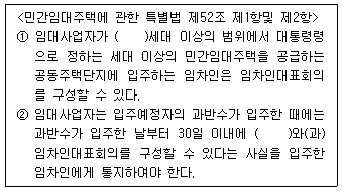
- 정답 : 20, 입주현황
- 본 문제는 주관식입니다. 1번을 누르면 정답 처리 됩니다.
- 본 문제는 주관식입니다. 1번을 누르면 정답 처리 됩니다.
- 본 문제는 주관식입니다. 1번을 누르면 정답 처리 됩니다.
- 본 문제는 주관식입니다. 1번을 누르면 정답 처리 됩니다.
(정답률: 알수없음)
69. 공동주택관리법령상 공동주택관리에 관한 감독에 대한 내용이다. ( )에 들어갈 숫자를 쓰시오.
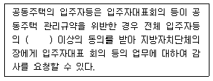
- 정답 : 10분의 3 또는 3/10, 100분의 30 또는 30/100
- 본 문제는 주관식입니다. 1번을 누르면 정답 처리 됩니다.
- 본 문제는 주관식입니다. 1번을 누르면 정답 처리 됩니다.
- 본 문제는 주관식입니다. 1번을 누르면 정답 처리 됩니다.
- 본 문제는 주관식입니다. 1번을 누르면 정답 처리 됩니다.
(정답률: 알수없음)
70. 산업재해보상보험법상 요양급여와 휴업급여에 관한 내용이다. ( )에 들어갈 숫자 를 순서대로 쓰시오.
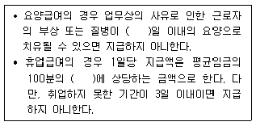
- 정답 : 3, 70
- 본 문제는 주관식입니다. 1번을 누르면 정답 처리 됩니다.
- 본 문제는 주관식입니다. 1번을 누르면 정답 처리 됩니다.
- 본 문제는 주관식입니다. 1번을 누르면 정답 처리 됩니다.
- 본 문제는 주관식입니다. 1번을 누르면 정답 처리 됩니다.
(정답률: 알수없음)
71. 공동주택관리법령상 선거관리위원회 구성에 관한 내용이다. ( )에 들어갈 숫자를 순서대로 쓰시오.
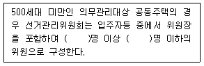
- 정답 : 3, 9
- 본 문제는 주관식입니다. 1번을 누르면 정답 처리 됩니다.
- 본 문제는 주관식입니다. 1번을 누르면 정답 처리 됩니다.
- 본 문제는 주관식입니다. 1번을 누르면 정답 처리 됩니다.
- 본 문제는 주관식입니다. 1번을 누르면 정답 처리 됩니다.
(정답률: 알수없음)
72. 공동주택관리법령에 따를 때 1,000세대의 공동주택에 관리사무소장으로 배치 된 주택관리사가 관리사무소장의 업무를 집행하면서 고의 또는 과실로 입주자등에게 재산상 손해를 입히는 경우의 손해배상책임을 보장하기 위하여 얼마의 금액을 보장하는 보증보험또는 공제에 가입하거나 공탁하여야 하는가?
- 정답 : 5천만원, 5,000만원, 50,000,000원, 오천만원
- 본 문제는 주관식입니다. 1번을 누르면 정답 처리 됩니다.
- 본 문제는 주관식입니다. 1번을 누르면 정답 처리 됩니다.
- 본 문제는 주관식입니다. 1번을 누르면 정답 처리 됩니다.
- 본 문제는 주관식입니다. 1번을 누르면 정답 처리 됩니다.
(정답률: 알수없음)
73. 다음은 어린이놀이시설 안전관리법의 용어 정의에 관한 내용이다. ( )에 들어갈 용어를 순서대로 쓰시오.
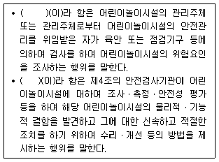
- 정답 : 안전점검, 안전진단
- 본 문제는 주관식입니다. 1번을 누르면 정답 처리 됩니다.
- 본 문제는 주관식입니다. 1번을 누르면 정답 처리 됩니다.
- 본 문제는 주관식입니다. 1번을 누르면 정답 처리 됩니다.
- 본 문제는 주관식입니다. 1번을 누르면 정답 처리 됩니다.
(정답률: 알수없음)
74. 다음은 배관계 또는 덕트계에서 발생할 수 있는 현상이다. ( )에 들어갈 용어를 쓰시오.
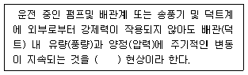
- 정답 : 서정(surging) 또는 서어징, 맥동, 써저징, 써징
- 본 문제는 주관식입니다. 1번을 누르면 정답 처리 됩니다.
- 본 문제는 주관식입니다. 1번을 누르면 정답 처리 됩니다.
- 본 문제는 주관식입니다. 1번을 누르면 정답 처리 됩니다.
- 본 문제는 주관식입니다. 1번을 누르면 정답 처리 됩니다.
(정답률: 알수없음)
75. 다음은 주택건설기준 등에 관한 규정의 비상급수시설 중 지하저수조에 관한 기준이다. ( )에 들어갈 숫자를 순서대로 쓰시오. (단, 조례는 고려하지 않음)
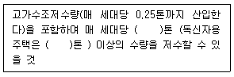
- 정답 : 0.5, 0.25
- 본 문제는 주관식입니다. 1번을 누르면 정답 처리 됩니다.
- 본 문제는 주관식입니다. 1번을 누르면 정답 처리 됩니다.
- 본 문제는 주관식입니다. 1번을 누르면 정답 처리 됩니다.
- 본 문제는 주관식입니다. 1번을 누르면 정답 처리 됩니다.
(정답률: 알수없음)
76. 다음은 도시가스사업법령상 시설기준과 기술기준 중 가스사용시설의 시설∙기술∙검사기준이다. ( )에 들어갈 숫자를 순서대로 쓰시오.
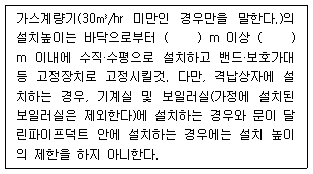
- 정답 : 1.6, 2
- 본 문제는 주관식입니다. 1번을 누르면 정답 처리 됩니다.
- 본 문제는 주관식입니다. 1번을 누르면 정답 처리 됩니다.
- 본 문제는 주관식입니다. 1번을 누르면 정답 처리 됩니다.
- 본 문제는 주관식입니다. 1번을 누르면 정답 처리 됩니다.
(정답률: 알수없음)
77. 다음은 배수관에 관한 내용이다. ( )에 들어갈 용어를 쓰시오.
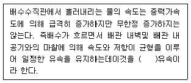
- 정답 : 종국(terminal)
- 본 문제는 주관식입니다. 1번을 누르면 정답 처리 됩니다.
- 본 문제는 주관식입니다. 1번을 누르면 정답 처리 됩니다.
- 본 문제는 주관식입니다. 1번을 누르면 정답 처리 됩니다.
- 본 문제는 주관식입니다. 1번을 누르면 정답 처리 됩니다.
(정답률: 알수없음)
78. 다음은 난방원리에 관한 내용이다. ( )에 들어갈 용어를 순서대로 쓰시오.
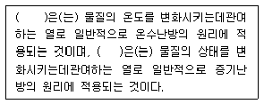
- 정답 : 현열 (sensible heat) 또는 감열, 잠열(latent heat)
- 본 문제는 주관식입니다. 1번을 누르면 정답 처리 됩니다.
- 본 문제는 주관식입니다. 1번을 누르면 정답 처리 됩니다.
- 본 문제는 주관식입니다. 1번을 누르면 정답 처리 됩니다.
- 본 문제는 주관식입니다. 1번을 누르면 정답 처리 됩니다.
(정답률: 알수없음)
79. 다음은 주택건설기준 등에 관한 규정의 세대 간의 경계벽등에 관한 기준이다. ( )에 들어갈 숫자를 순서대로 쓰시오.
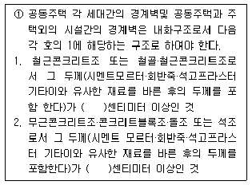
- 정답 : 15, 20
- 본 문제는 주관식입니다. 1번을 누르면 정답 처리 됩니다.
- 본 문제는 주관식입니다. 1번을 누르면 정답 처리 됩니다.
- 본 문제는 주관식입니다. 1번을 누르면 정답 처리 됩니다.
- 본 문제는 주관식입니다. 1번을 누르면 정답 처리 됩니다.
(정답률: 알수없음)
80. 다음은 국가화재안전기준(NFSC)상 옥외소화전설비의 소화전함 설치기준이다. ( )에 들어갈 숫자를 순서대로 쓰시오.
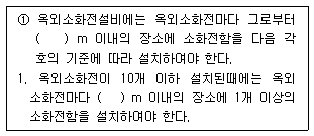
- 정답 : 5, 5
- 본 문제는 주관식입니다. 1번을 누르면 정답 처리 됩니다.
- 본 문제는 주관식입니다. 1번을 누르면 정답 처리 됩니다.
- 본 문제는 주관식입니다. 1번을 누르면 정답 처리 됩니다.
- 본 문제는 주관식입니다. 1번을 누르면 정답 처리 됩니다.
(정답률: 알수없음)